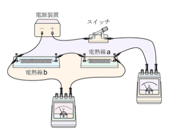
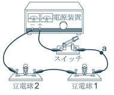

1電流の性質
📖 江原予備校テキスト 練習より
直列回路・並列回路の電流の関係を確認します。
✏️ 例題:電流の関係(全3問)
例題 図1
問1図1で、電流計に流れる電流をI1、P・Qに流れる電流をI2・I3とする。I1・I2・I3の関係を表した式はどれか。
正解はア。直列回路なので、電流はどの点でも等しく、I1＝I2＝I3です。
例題 図2
問2図2で、I1＝300mA、I2＝120mAであった。I3は何mAか。
正解はウ。I1＝I2＋I3なので、I3＝300－120＝180mAです。
問3図2で、I4は何mAか。
正解はウ。合流したあとの電流は分かれる前と等しいので、I4＝I1＝300mAです。
✏️ 練習(1):豆電球のつなぎ方と電流(全3問)
問1図1、図2の回路の名前の組み合わせとして、正しいものはどれか。
正解はア。図1は道すじが1本なので直列回路、図2は道すじが2本に分かれるので並列回路です。
問2図1で、豆電球Bを流れる電流は何Aか。(電流計は0.3A)
正解はエ。直列回路では電流はどの点でも等しいので、Bにも0.3Aが流れます。
問3図2で、豆電球Bを流れる電流は0.2Aであった。豆電球Aを流れる電流は何Aか。(電流計は0.6A)
正解はイ。全体が0.6Aで、Bに0.2A流れているので、Aには0.6－0.2＝0.4A流れます。
✏️ 練習(2):電圧計をつなぐ回路図(全1問)

【沖縄県】電熱線a,bと電圧計・電流計をつないだ実験装置
問4電熱線a、b全体にかかる電圧をはかるように、電圧計をつないだ回路図はどれか。
正解はア。電圧計は、電圧をはかりたい部分(a・b全体)に並列につなぎます。
✏️ 練習(2)つづき:豆電球1の電圧(全1問)

【鹿児島県】電源装置・スイッチ・豆電球1,2・計器をつないだ実験装置
問5豆電球1の電圧をはかるように、電圧計をつないだ回路図はどれか。
正解はウ。豆電球1の電圧をはかるので、電圧計は豆電球1だけに並列につなぎます。
2電圧の性質
📖 江原予備校テキスト 練習より
直列回路・並列回路の電圧の関係を確認します。
✏️ 例題:電圧を求めよう(全7問)
(1)
問1(1) xは何Vか。
正解はイ。直列回路なので、8＋x＝10。x＝2Vです。
(2)
問2(2) xは何Vか。
正解はエ。直列回路なので、4＋x＝12。x＝8Vです。
(3)
問3(3) xは何Vか。
正解はエ。並列つなぎのところは電圧が等しいので、x＝6Vです。
問4(3) yは何Vか。(電源の電圧)
正解はイ。並列部分の電圧と電源の電圧が等しいので、y＝6Vです。
(4)
問5(4) xは何Vか。
正解はウ。並列つなぎなので、xは8Vの抵抗と同じ8Vです。
問6(4) yは何Vか。(電源の電圧)
正解はア。直列部分(4V)と並列部分(8V)の和なので、y＝4＋8＝12Vです。
✏️ 練習(1):電流と電圧(全4問)
練習(1)の回路
問1アにかかる電圧とウにかかる電圧の和は何Vか。(電源は6V)
正解はイ。アとイの並列部分とウが直列なので、アにかかる電圧とウにかかる電圧の和は電源の電圧6Vです。
問2イにかかる電圧は何Vか。(ウにかかる電圧は2V)
正解はエ。イはアと並列で、アにかかる電圧と等しい。6－2＝4Vです。
問3ウに流れている電流は何mAか。(全体の電流計は0.48A)
正解はア。ウは全体の電流が流れる道すじにあるので、0.48A＝480mAです。
問4アに流れる電流は何mAか。(イは0.36A)
正解はウ。0.48－0.36＝0.12A＝120mAです。
✏️ 練習(2):並列回路の電流と電圧(全3問)
練習(2)の回路
問1アにかかる電圧は何Vか。
正解はウ。アは電池と並列なので、電源の電圧10Vがかかっています。
問2ウにかかる電圧は何Vか。(となりの豆電球に3Vかかっている)
正解はア。直列の2個で10Vを分けあうので、10－3＝7Vです。
問3イに流れる電流は何mAか。(全体3A、アに2A、下の道すじに0.5A)
正解はエ。3－2－0.5＝0.5A＝500mAです。
✏️ 練習(3):電流と電圧の性質(全4問)
問1図1、図2の豆電球のつなぎ方の組み合わせはどれか。
正解はイ。図1は1本の道すじなので直列つなぎ、図2は2本に分かれているので並列つなぎです。
問2図1、図2の電流の関係を表した式の組み合わせとして正しいものはどれか。
正解はア。直列(図1)は電流が等しく、並列(図2)は分かれた電流の和が全体の電流になります。
問3図1、図2の電圧の関係を表した式の組み合わせとして正しいものはどれか。
正解はウ。直列(図1)は電圧の和が電源の電圧、並列(図2)は電圧がみな等しくなります。
問4同じ電池・同じ豆電球を使った図1、図2で、豆電球Aが明るいのはどちらか。
正解はイ。図2(並列)では、Aに電源の電圧がかかります。図1(直列)では電圧を分けあうので、Aは暗くなります。